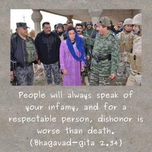

People will always speak of your infamy, and for a respectable person, dishonor is worse than death.

Both as friend and philosopher to Arjuna, Lord Kṛṣṇa now gives His final judgment regarding Arjuna’s refusal to fight. The Lord says, “Arjuna, if you leave the battlefield before the battle even begins, people will call you a coward. And if you think that people may call you bad names but that you will save your life by fleeing the battlefield, then My advice is that you’d do better to die in the battle. For a respectable man like you, ill fame is worse than death. So, you should not flee for fear of your life; better to die in the battle. That will save you from the ill fame of misusing My friendship and from losing your prestige in society.”
So, the final judgment of the Lord was for Arjuna to die in the battle and not withdraw.